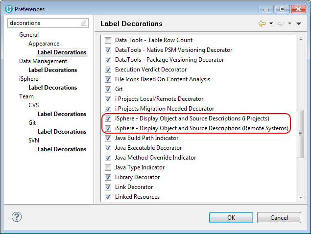
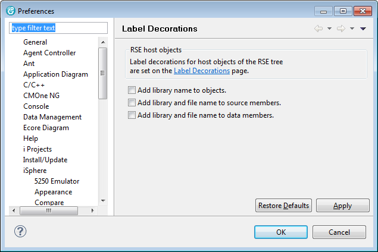

There is a link to the 'Label Decoration' preferences on the related iSphere preferences page:

The available message file search options are:
| Add library name to objects | - | Specifies whether or not the the name of the library that contains the object is added to the object decoration objects. |
| Add library and file name to source members | - | Specifies whether or not the qualified name of the parent file is added to the object decoration of source physical file members. |
| Add library and file name to data members | - | Specifies whether or not the qualified name of the parent file is added to the object decoration of data physical file members. |